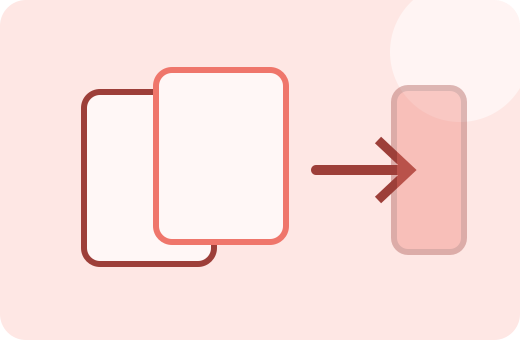
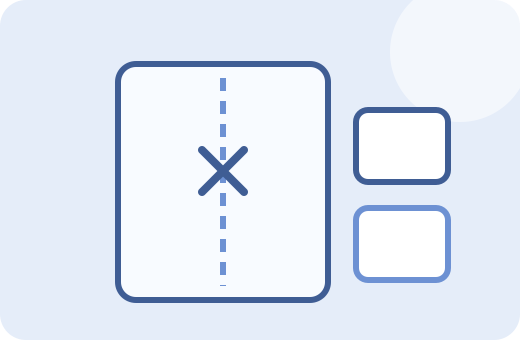
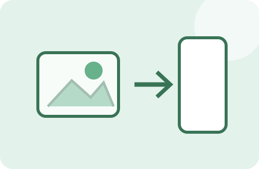
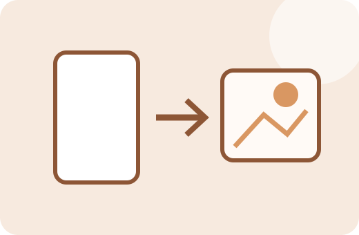

문서 통합
PDF 합치기
여러 PDF를 선택한 순서대로 하나의 문서로 합칩니다.
PDF 센터FREE
PDF 합치기·나누기·압축·이미지 변환·페이지 편집까지 자주 필요한 PDF 작업을 한곳에 모았습니다.


여러 PDF를 선택한 순서대로 하나의 문서로 합칩니다.

필요한 페이지 번호를 골라 새 PDF로 저장합니다.

JPG·PNG 이미지를 한 개의 PDF 문서로 묶습니다.

PDF 각 페이지를 이미지로 변환해 저장합니다.

품질과 크기의 균형을 보며 PDF 파일 용량을 줄입니다.

페이지 회전·삭제·순서 변경을 한 화면에서 처리합니다.
문구·투명도·위치를 설정해 워터마크를 넣습니다.
시작 번호와 위치를 정해 페이지 번호를 추가합니다.

제목·작성자 등 PDF 문서정보를 확인하고 수정합니다.
PDF 파일은 가능한 작업을 브라우저 안에서 처리하도록 구성했습니다. 각 도구는 실제 실행 화면뿐 아니라 사용방법, 처리 기준, 예시, 주의사항과 다음 작업에 필요한 관련 도구까지 이어지도록 보강했습니다.
현재 브라우저에서 처리하도록 구현된 도구는 사용자의 브라우저 안에서 작업합니다. 외부 라이브러리를 불러오는 경우 인터넷 연결은 필요할 수 있습니다.
대부분의 도구는 모바일 브라우저에서도 사용할 수 있도록 반응형으로 구성하지만, 큰 PDF나 고해상도 이미지는 PC가 더 안정적일 수 있습니다.